Training Large Models
回顾一下GPU hierarchy： 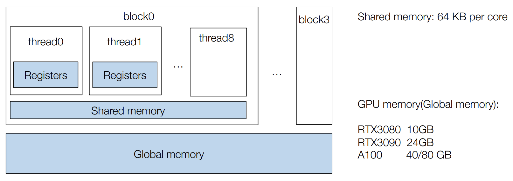 可以看到GPU memory是主要的瓶颈，限制了太大的模型是放不进去的。
到底是哪些东西会消耗内存呢： 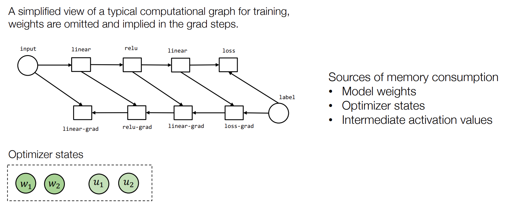
1. Techniques for memory saving¶
1.1 Inference Only¶
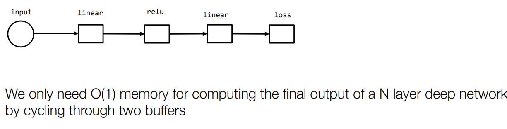
其实只用两个buffer就可以了，一个是当前这一步计算需要的东西，一个是计算出来的结果（也是下一步计算需要的东西）。通过这样的方法交替向前，就可以保证O(1)的内存占用。
1.2 Activation memory cost for training¶
在训练的过程中，每一层的output都要被存储下来，不能在下一层的output计算出来后就把上一层的output给释放掉，因为在反向传播的时候还要用来计算梯度（回忆 Automatic Differentiation里的包含反向传播的计算图）。
所以如果要训练N layer的模型，那么需要的内存是O(N)的。
这里介绍一下Gradient Checkpointing，可以有效的减少内存的使用：
Gradient Checkpointing
key idea: 在forward计算时只存一些layer的activation，然后在backward的时候再 recompute 其他需要的activation，用计算换存储。
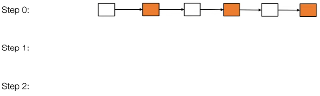
recompute一下白色的： 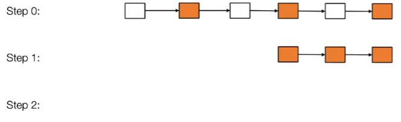
进行反向传播： 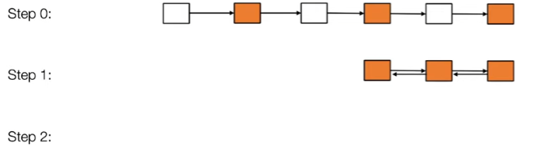
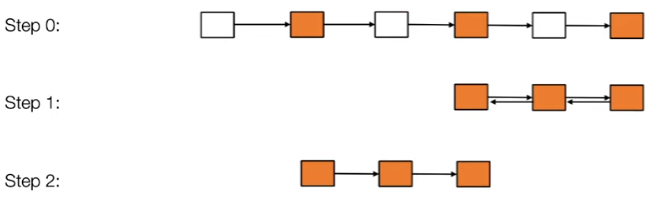
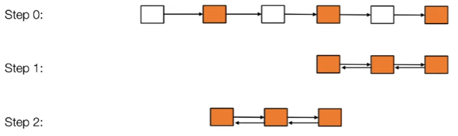
空间复杂度分析： 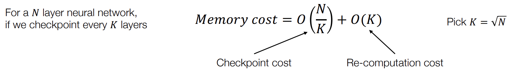 第二项是因为recomputation的时候中间结果也不能丢
取 \(K = \sqrt{N}\)，那么空间复杂度就是 \(O(\sqrt{N})\) 了。
实际上又做了一遍forward computation，但由于forward的计算量一般比backward的计算量小，所以整体上增加了大概25%的计算时间。
一般选择那些算起来比较快的layer来做recomputation，比如ReLU就比卷积recomputation快很多。
2. Parallel and distributed training¶
2.1 Model parallel training¶
Break up
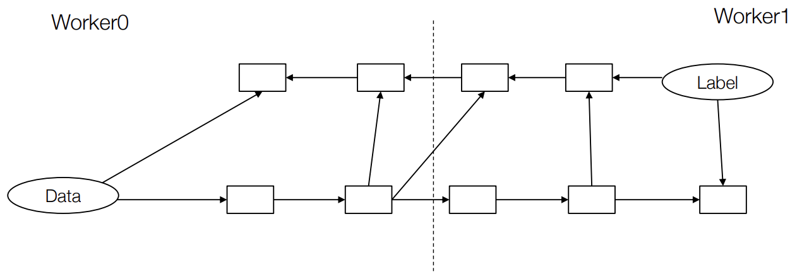
Partition the graph, put send/recv pairs in the boundary 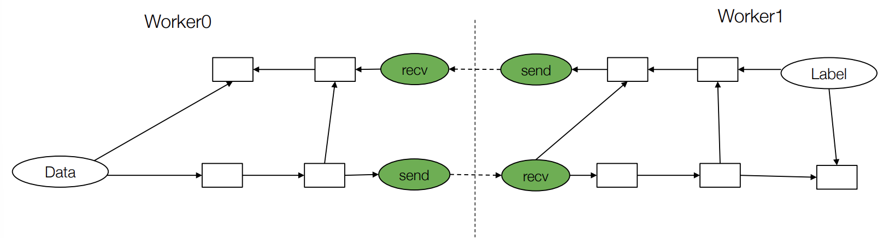
还可以在此基础上加上micro-batch的概念，把一个batch分成多个micro-batch，形成Pipeline parallelism： 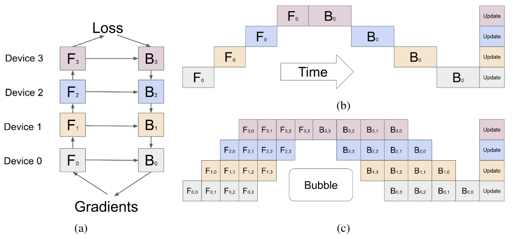
2.2 Data parallel training¶
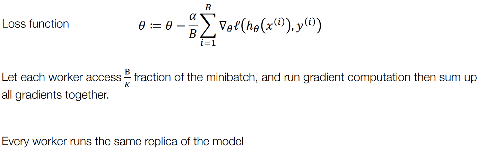
2.2.1 Allreduce abstraction¶
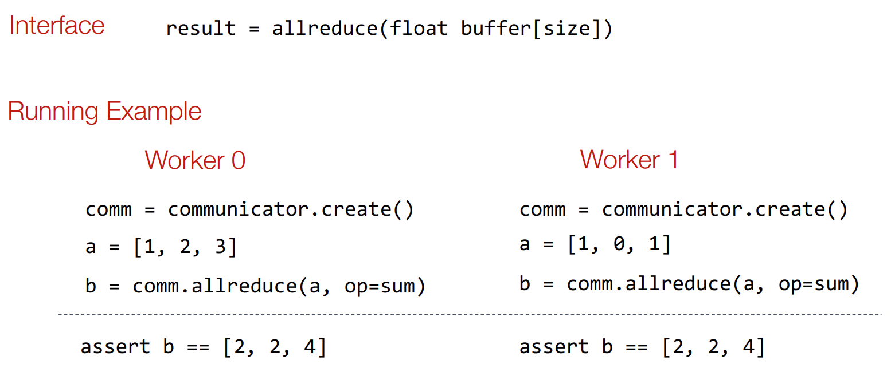
有很多种实现方式和实现的库
通过Allreduce让每个worker都有所有worker的梯度，然后每个worker都可以更新自己的参数： 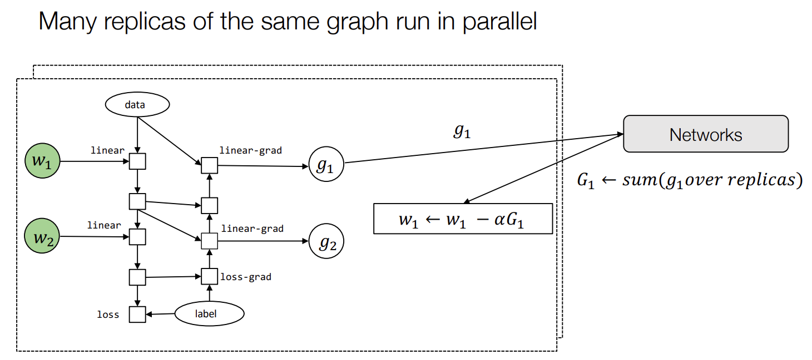
2.2.2 Parameter server abstraction¶
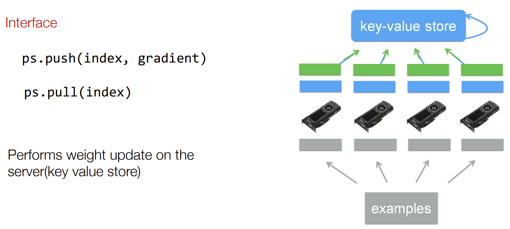
-
本质上和KV-store很像
-
可以允许一定程度的异步 weight update
-
有一定程度的 fault tolerance
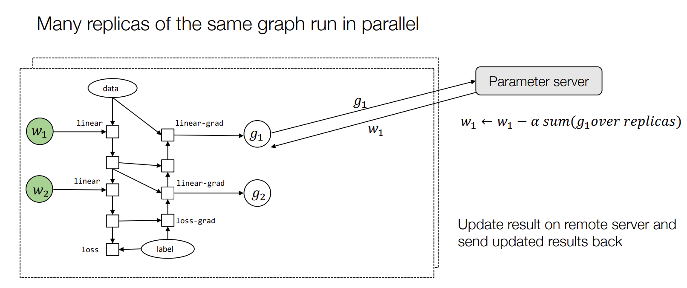
2.2.4 Communication computation overlap¶
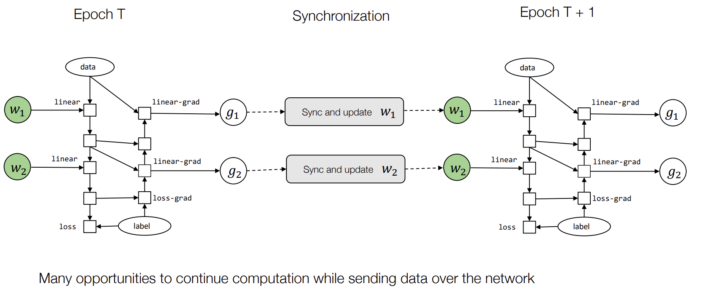
-
同步g2的时候，可以同时进行计算g1的backward
-
算好g1的时候，g2还没发送好，可以抢占通信，优先发送g1，这样g1先同步好就可以先进行下一个epoch的forward了
创建日期: 2023-08-24